Photo : Caritas Africa, cadre stratégique 2024–2030
Membre de la confédération Caritas Internationalis
Qui sommes-nous
Le ministère de la pastorale sociale de l'Église catholique en Afrique, et l'une des sept régions de Caritas Internationalis.
Découvrir Caritas AfricaNotre action
Répondre aux urgences, renforcer les Caritas nationales, servir les plus pauvres et porter leur voix.
Découvrir notre actionNotre réseau
46 Caritas nationales dans 46 pays d'Afrique, îles comprises, organisées en six zones.
Explorer le réseauRessources
Nos rapports annuels depuis 2011, le cadre stratégique et les publications du réseau, en français, anglais et portugais.
Ouvrir la bibliothèqueActualités
Les déclarations du réseau, les communiqués et la vie des Caritas nationales.
Toutes les actualités
Photo : Caritas Africa, cadre stratégique 2024–2030
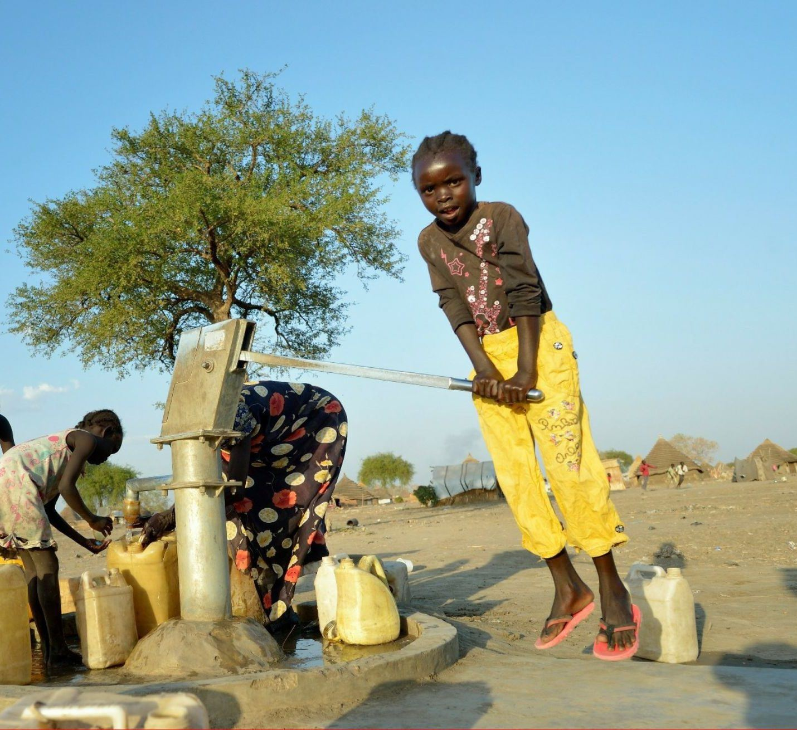
Photo : Paul Jeffrey / Caritas Internationalis
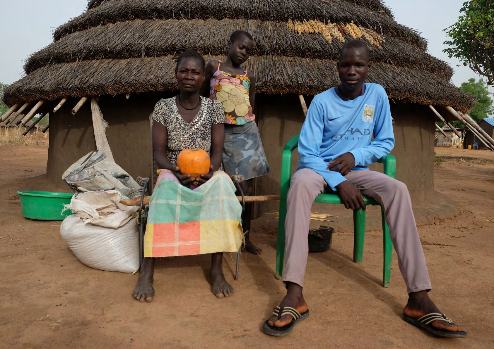
Photo : Caritas Africa, cadre stratégique 2024–2030
Inspirés par l'Évangile, nous travaillons dans un esprit de communion, de coopération fraternelle et de partenariat pour une Afrique meilleure.
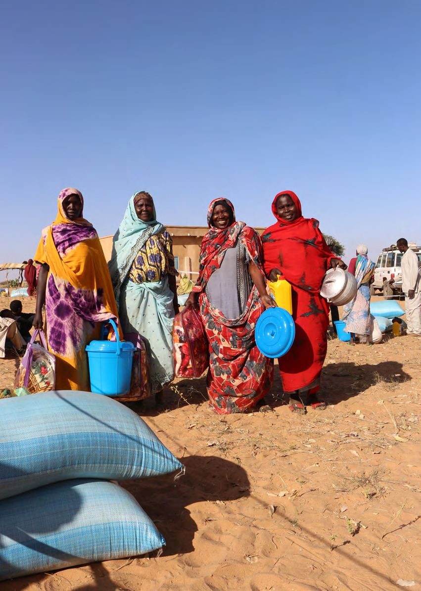
Répondre efficacement aux urgences humanitaires, aux côtés des Caritas nationales de chaque pays et avec l'ensemble de la confédération Caritas.
En savoir plus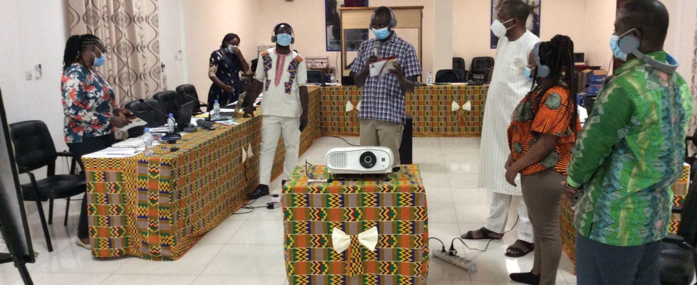
Un accompagnement de proximité pour le renforcement organisationnel : avec le programme APPROCHE, 17 Caritas nationales et 202 Caritas diocésaines ont été accompagnées de 2019 à 2023.
En savoir plus
Promouvoir le développement humain intégral, avec une attention prioritaire aux plus démunis, et donner à chacun les moyens d'agir pour sa communauté.
En savoir plus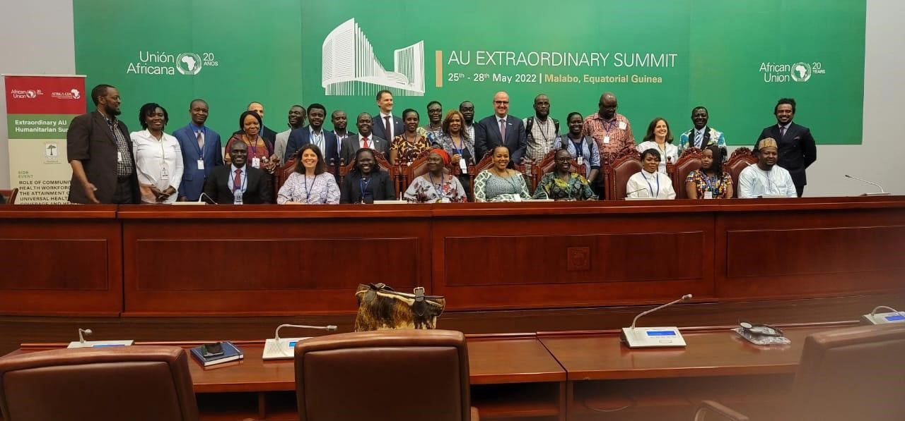
Le plaidoyer auprès des institutions africaines et internationales, comme la déclaration conjointe du réseau au sommet Union africaine – Union européenne.
Lire la déclarationCaritas Africa est l'une des sept régions de la confédération Caritas Internationalis, qui compte 162 membres. Elle réunit les Caritas nationales de 46 pays d'Afrique, îles de l'Atlantique et de l'océan Indien comprises.
Formellement liée à l'Église catholique en tant que ministère de la pastorale sociale en Afrique, elle a été officiellement constituée le 20 janvier 1995 à Matola, au Mozambique, lorsque ses membres ont approuvé ses premiers statuts.
Depuis son secrétariat exécutif régional, à Lomé, elle anime, coordonne, représente et renforce ses membres, pour que chacun serve au mieux les plus pauvres de son pays.
Notre histoire« Témoigner de l'amour de Dieu »
À travers des œuvres de charité et de justice, en vue d'assurer le développement humain intégral, avec une attention prioritaire aux pauvres et aux plus démunis.
« La vie en plénitude pour tous »
Des communautés épanouies en Afrique, où l'amour, la réconciliation, la justice, la paix et la prospérité prévalent pour tous, et où la dignité de chaque femme, homme et enfant est promue.
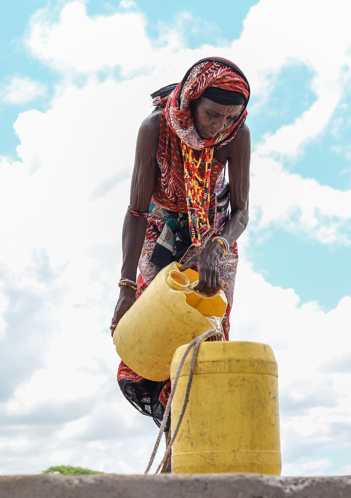
Une présentation de Caritas Africa sur une seule page, aussi disponible en anglais.
Le texte final de la déclaration de Dakar, aussi disponible en anglais.
« In this Jubilee Year 2025, a special year of forgiveness and reconciliation… »
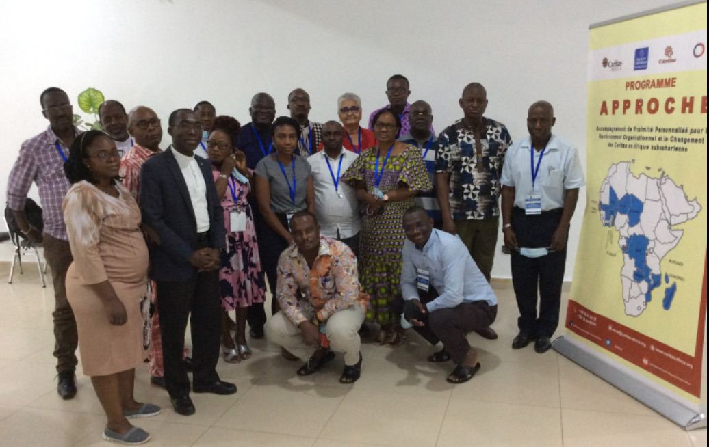
Assemblée des parties prenantes à Lomé, du 29 mai au 1er juin 2023 : 17 Caritas nationales, 202 Caritas diocésaines et un budget de 2,5 M€ sur 2019–2023.
Participants du programme APPROCHE. Photo : rapport annuel 2021
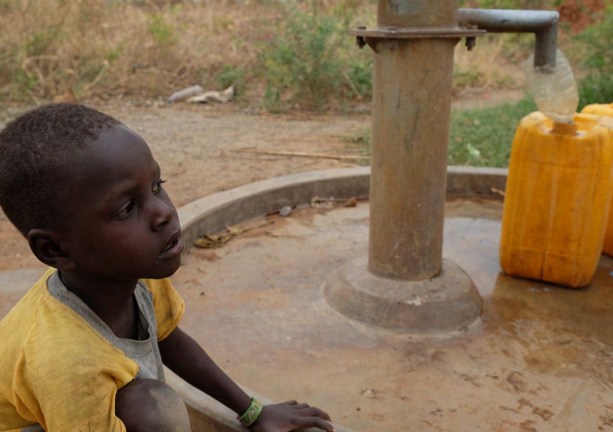
Votre don rejoint l'action de Caritas Africa pour la justice et la charité envers les plus défavorisés du continent.
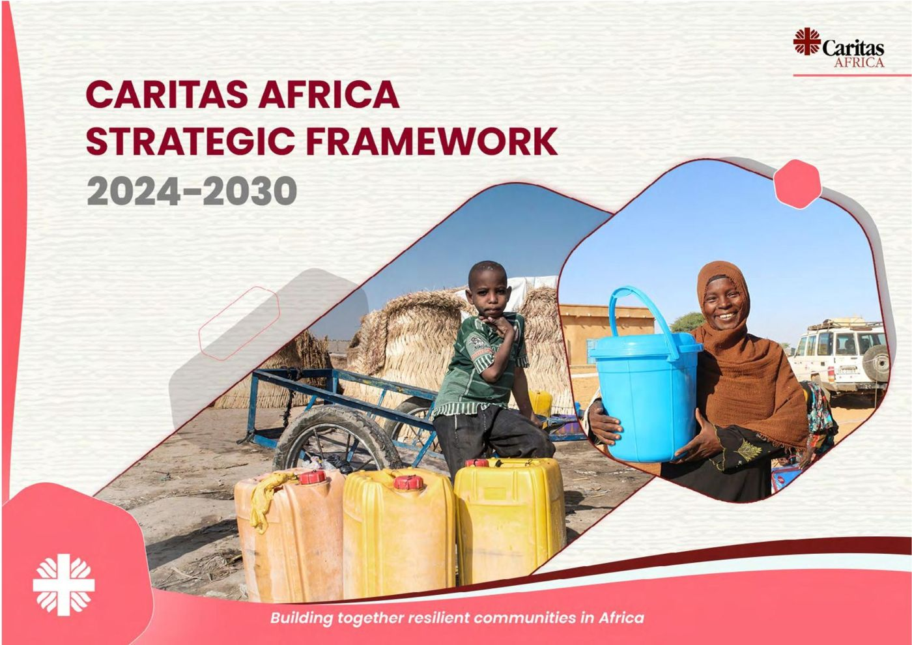
Building together resilient communities in Africa
Le cadre stratégique oriente l'action de Caritas Africa et de ses 46 organisations membres pour les années 2024 à 2030.

Rendre compte, chaque année
Caritas Africa publie un rapport annuel. Ceux de 2011 à 2023 sont en ligne, en français, en anglais et parfois en portugais.
46 Caritas nationales dans 46 pays d'Afrique
Six zones, qui portent le nom des conférences épiscopales régionales, organisent la coordination entre les membres. Chacune est coordonnée par une Caritas nationale.
Commission régionale 2023–2027. Président : Mgr Pierre CIBAMBO NTAKOBAJIRA. Vice-président : M. Santos GOTINE. Trésorier : M. Philippe Yaovi AHOUANYE.
Gouvernance et équipeToute suspicion d'abus ou d'exploitation d'un enfant ou d'un adulte vulnérable impliquant le personnel ou les collaborateurs de Caritas doit être signalée. L'identité de la personne qui signale n'est divulguée qu'en cas de « besoin d'en connaître ».

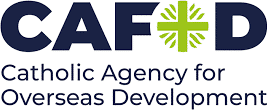


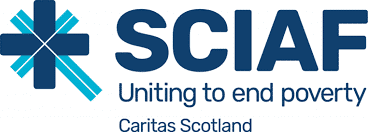